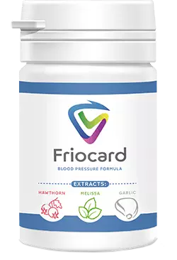

Discutarea celei mai scandaloase știri din această săptămână în studioului Romania 9: "Pensionarii sunt bătrânii, lasă-i să moară, nu le este milă. Dacă nu presiune sau inima, atunci altceva îi va ucide. Nu are rost să cheltuie bani pe bătrâni!»
Cu câteva zile în urmă, pe rețelele de socializare s-a răspândit larg o înhăţare a ecranului a mesajului scandalos al lui Mihaela Bălănoiu, farmacistul-șef adjunct al României. După anunț, și-a șters contul de pe Facebook. Dar avem înhăţare a ecranului a înregistrării pe care o demonstrăm.
Din fericire, nu tot Guvernul României împărtășește punctul de vedere al acestui funcționar.
Ieri a devenit cunoscut faptul că Mihaela Bălănoiu și toată conducerea departamentului de farmacie au fost demiși și acolo se efectuează verificarea. Pentru a înțelege esența a ceea ce se întâmplă, am invitat la studio șeful departamentului de farmacie din România, reprezentantul celei mai mari rețele de farmacii "Farmastoc" din România și șeful Centrului Științific de Chirurgie Cardiovasculară.
Ionuţ Cristache. Cum poate o astfel de persoană să lucreze în structurile guvernamentale? Din contul cui și-a cumpărat un conac de lux și zboară în mod regulat să se odihnească în stațiunile scumpe?
De ce astfel de oameni decid soarta unui medicament românesc unic de la Institutul de patologii cardiovasculare din București, care tratează inima și presiunea, prevenind moartea? Și care trebuie să fie accesibil tuturor cetățenilor români, nu doar celor bogați. Ne înțelegem situația.
Ionuț Cristache: "Prima întrebare e pentru Paul Crețu - șeful departamentului farmaceutic din România. Paul, cum a ajuns un om de acest gen într-o poziție atât de înaltă?"
Paul Crețu: Pentru a înțelege situația mea, am fost numit în funcția de șef al Departamentului acum trei zile. Întreagă conducere veche a fost concediată, inclusiv femeia în cauză. Deci, în acest moment, ea nu mai este în serviciul public și nu are nimic de-a face cu medicina românească.
Motivul concedierii în masă, după cum știți, a fost suspiciunea de corupție. Sarcina mea este să revizuiesc toate deciziile luate. Deja acum pot spune că un întreg grup de soluții de conducere veche trebuie revizuite.
Ionuț Cristache: "Adică au concediat-o nu doar pe ea, ci și pe toată conducerea? Ce decizii vreți să spuneți? Puteți da un exemplu?"
Paul Crețu: Da, toată vechea conducere a departamentului a fost concediată în total. De exemplu, se poate da o întrebare care se ridică într-o înhăţare a ecranului pe care ați prezentat-o. Acolo ei discută inițiativa Ministerului Sănătății al României de a distribui un nou medicament pentru tratamentul hipertensiunii arteriale în rândul pensionarilor. Potrivit acestei inițiative, a fost planificat să lanseze un program special pe plan intern, la care oamenii ar putea obține medicamentul la un preț minim. În același timp, a fost planificat să interzică expedierea sa la export, deoarece cantitatea medicamentului este limitată.
Dar vechea conducere a luat decizia opusă. Ei au blocat ideea unui medicament disponibil pentru propriii cetățeni și au preferat vânzarea sa în străinătate. Chiar au reușit să semneze un contract cu Franța pentru furnizarea medicamentului. La un preț de 10 000 RON per ambalaj. Acest lucru în ciuda faptului că nici măcar nu au avut acest drept, deoarece drepturile la medicament aparțin Institutului de patologii cardiovasculare din București
Ionuț Cristache: "Ce preț ridicat. 10 000 RON per ambalaj. De ce atât de scump? Și cum a fost de gând să-l vândă la un preț minim, bugetul pur și simplu nu va suporta astfel de cheltuieli?"
Paul Crețu: 10 000, acesta este costul pe care l-au expus francezilor, și aceștia au fost de acord. Aici Bălănoiu avea dreptate, peste hotare chiar sunt gata să achite aproape orice bani.
Motivul este simplu - acesta este singurul medicament din întreaga lume care poate vindeca complet sistemul cardiovascular al unei persoane, aducându-l înapoi într-o stare sănătoasă. Probabil știți singuri că bolile de inimă sunt cauza a două treimi din decesele din lume. Medicamentul elimină complet persoana de la acestea. Fără intervenție chirurgicală și riscul de deces pe masa de operație. Presiunea unei persoane încetează să crească, vasele sunt vindecate, ceea ce înseamnă că VA TRĂI MULT MAI MULT.
Costul medicamentului în producție, din câte știu, este de 530 RON. O mare parte din această sumă a fost planificată să fie compensată din Fondul medical românesc, iar medicamentul însuși să fie eliberat persoanelor conform programului la un preț minim.
Ionuț Cristache: "Întrebarea pentru Ioan Constantin - ce este în acest medicament, că în străinătate este gata să cumpere la un astfel de preț? 10 000 RON per ambalaj, este incredibil de scump."
Ioan Constantin: Acesta este un medicament la care echipa Institutului de patologii cardiovasculare din București a lucrat mai mult de un deceniu. În final s-a dovedit un medicament unic, care este capabil să îmbunătățească complet sistemul cardiovascular al unei persoane. Aproximativ vorbind, îl readuce la starea inițială. Chiar dacă o persoană are boli grave ale inimii și vaselor de sânge. Eșecul inimii, accidentul vascular cerebral și infarctul sunt cauzele a două treimi din decesele din lume. Medicamentul vă permite să preveniți toate cele trei patologii și să preveniți moartea timpurie a unei persoane. De aici există o cerere atât de nebună.
Ionuț Cristache: "Ce anume face acest medicament?"
Ioan Constantin: Acesta este un medicament complex care acționează asupra întregului sistem cardiovascular odată, rezolvând simultan mai multe probleme.
Curăță complet vasele de murdărire și dizolvă cheagurile de sânge. DATORITĂ UNEI SUBSTANȚE UNICE - ALFAHIDROCALCIFEROL. PENTRU DESCOPERIREA ACESTEI SUBSTANȚE, OAMENII DE ȘTIINȚĂ ELVEȚIENI AU PRIMIT PREMIUL NOBEL ÎN 2011. Colesterolul, depunerile de grăsime, cheaguri de sânge - toate acestea sunt un lucru din trecut. Ceea ce este important artera ischemică este, de asemenea curățat, ceea ce reduce la zero riscul de infarct miocardic.
Începe procesul de regenerare a mușchiului cardiac. Există o recuperare a zonelor deteriorate, supapele cardiace revin la normal, de obicei suferă foarte mult din cauza hipertensiunii arteriale.
Restabilește pereții vaselor deteriorate și le întărește. Este prevenit riscul de ruptură a vaselor și hemoragie cerebrală. În general, vasele devin complet sănătoase și elastice, ca și în tinerețe.
MEDICAMENTUL CONȚINE APROXIMATIV 50 DE MACRO- ȘI MICROELEMENTE UTILE PENTRU INIMĂ ȘI VASE, PRECUM ȘI VITAMINE.
Ca rezultat, există o recuperare completă a sistemului cardiovascular uman. Și el se întoarce într-o stare absolut sănătoasă. După cum au confirmat studiile clinice în mai multe etape, medicamentul ajută chiar și în cazul unei stări extrem de severe a pacientului. Dacă aveți simultan boală coronariană, tensiunea arterială crescută, aritmie și tahicardie - medicamentul oricum va ajuta. Un punct important este eliminarea completă a hipertensiunii arteriale, adică presiunii ridicate. Care este cauza principală a tuturor bolilor cardiace și vasculare.
Ionuț Cristache: "Puteți întrerupe aici? Presiunea crescută este aceeași rutină pentru majoritatea oamenilor. Iar dvs. spuneți că este cauza bolilor de inimă și a vaselor de sânge. Vreți să ne explicați?"
Ioan Constantin: De aceea avem o cauza a aproape 70% din decese sunt boli cardiace și vasculare. Pentru că toată lumea crede că presiunea crescută este normală.
În același timp, din cauza presiunii crescute, toate bolile sistemului cardiovascular încep să se dezvolte. Și toate decesele din cauza insuficienței cardiace, a infarctului sau a accidentului vascular cerebral sunt vina presiunii crescute.
Ionuț Cristache: "De ce este atât de periculoasă?"
Ioan Constantin: Dacă este expusă destul de scurt, presiunea începe să crească din cauza stagnării sângelui în arterele mici. Organismul are nevoie să împingă sângele la viteza dorită mai departe și astfel asigură ceea ce este necesar.
Din cauza supratensiunii, pereții arterelor mari încep să se deterioreze. La locul leziunilor începe să se stabilească colesterolul și alte plăci grase. Ateroscleroză apare.
Momentul nr.1 - aceasta duce la boli cardiace coronariene. Momentul nr. 2 - intensitatea creșterilor de presiune la om crește. Care, la rândul său, duce la o murdărire mai mare a vaselor de sânge.
În același timp, sarcina asupra inimii crește, care se uzează de mai multe ori mai repede decât ar trebui. Problemele cu valvele cardiace încep, apar aritmie și tahicardie. Din cauza presiunii adesea crescute, riscul de rupere a vaselor și accident vascular cerebral crește. O persoană are imediat un întreg set de boli mortale, care inițial se datorează unei singure presiuni crescute. Omul poate muri în orice moment.
Ionuț Cristache: "Cât de mare este probabilitatea decesului precoce? Dacă, de exemplu, am început presiunea crescută, cât timp va trece de la debutul bolii la moarte?"
Ioan Constantin: Dacă luăm în considerare metodele de tratament ale pacienților pe care majoritatea medicilor și medicamentelor pe care le prescriu, atunci probabilitatea de deces este de 100%. Din păcate, acum în farmaciile românești pur și simplu nu există medicamente eficiente. Și în UE, în general, de aceea francezii sunt gata să cumpere acest medicament.
Infarctul miocardic, insuficiența cardiacă acută, accidentul vascular cerebral - ceva din aceasta va afecta cu siguranță și va ucide o persoană. Timpul de la apariția primelor creșteri de presiune și până la moarte este diferit și depinde de factorii individuali. Depinde mult de stilul de viață, de medicamentele luate și de ereditatea dumneavoastră.
În medie, pot spune cu exactitate că presiunea crescută și alte boli ale sistemului cardiovascular reduc viața unei persoane cu 15-20 de ani, nu mai puțin. Cineva, de exemplu, ar putea trăi până la 80, dar moare la 60 de ani. Este adevărat și invers, dacă este timpul să vindecați vasele și inima, atunci puteți trăi mult mai mult.
Ionuț Cristache: "Cum să te salvezi? Există opțiuni de tratament eficient? Putem conta pe ajutorul medicilor din România?"
Ioan Constantin: Depinde de situația specifică. Știți că o mulțime de medici au, de fapt, un salariu de la companiile farmaceutice. În același timp, mulți dintre ei nici măcar nu știu că îi ajută pe pacient să meargă în lumea cealaltă atunci când prescriu anumite medicamente. Nu-și dau seama cât de periculoși aceștia sunt.
Cealaltă parte a problemei este rețelele farmaceutice, unde practic nu există medicamente eficiente. Farmacii, este totuși în primul rând o afacere interesată de profitul maxim. Ei nu sunt interesați de medicamente noi care pot ajuta cu adevărat. Inclusiv dezvoltarea Institutului de patologii cardiovasculare din București, de care au refuzat categoric toate farmaciile din România.
Tocmai după aceea, conducerea Institutului s-a adresat Ministerului Sănătății să lanseze un program național, în timpul căruia fiecare persoană, în ciuda nivelului de prosperitate, ar putea cumpăra un remediu foarte eficient pentru tratamentul inimii și vaselor de sânge. Dar au primit refuz de la Bălănoiu, care, de asemenea, a vrut să forțeze să vândă "Friocard" în străinătate, care, în general, este drept o nebunie. Am lucrat zece ani pentru a ajuta cetățenii români, nu francezii sau germanii.
Ionuț Cristache: La noi în studio există reprezentantul rețelei farmaceutice "Farmastoc", Robert Mocanu. Întrebare - De ce ați renunțat la medicamentul "Friocard"?
Robert Mocanu: Ei nu au oferit un parteneriat de afaceri, ci un fel de socialism. Să vindem medicamentul cu o marjă maximă de 10%, la un cost fix. Și, de asemenea, au vrut să reducă treptat prețul de achiziție pentru acesta prin atragerea de fonduri medicale sau de finanțare de stat. Unde se potrivește? Îmi pare rău, dar avem o afacere privată. Și dacă oferta nu este comercial profitabilă, atunci avem tot dreptul să o respingem.
Ioan Constantin: Nu aveți doar o afacere privată. Viața oamenilor depinde de aceasta. La urma urmei, ei cumpără medicamente de la dvs. Vindeți medicamente ineficiente despre care știm, refuzând să vindeți tot ceea ce vă poate afecta profiturile. Am participat personal la negocieri și am auzit că angajații dvs. au spus că "Friocard" noastră va distruge vânzările tuturor medicamentelor pentru inimă și hipertensiune arterială, care reprezintă două treimi din profitul dvs. Este scârbos și oribil să facă bani pe viețile oamenilor!
Ionuț Cristache: Robert, puteți comenta cumva acest lucru?
Robert Mocanu: Nu sunt sigur că merită să răspund. Pot doar să spun că toate medicamentele vândute la noi au fost certificate în România. Dacă vreunul dintre ei este interzis, atunci le vom scoate imediat din vânzare. Dar totul se face strict în conformitate cu legislația. În ceea ce privește "Friocard" de la Institutul de patologii cardiovasculare din București, așa cum am spus deja, avem o afacere privată. Și nu putem fi forțați să vindem ceva împotriva voinței noastre.
Ioan Constantin: În timp ce oameni ca Bălănoiu lucrau la Departamentul farmaceutic, îmi pot imagina cum noile medicamente au trecut procedura de certificare. Sper că noua conducere se va ocupa inclusiv de verificarea medicamentelor prezente.
Ionuț Cristache: Paul, se dovedește "Friocard" până acum se află în depozit?
Paul Crețu: Din fericire, nu. Am trecut deja de la eliminarea problemelor administrative ale echipei anterioare la munca normală. Și noi, împreună cu Institutul de patologii cardiovasculare din București, precum și cu Fundația Națională Medicală din România, am stabilit distribuirea directă a "Friocard".
Mai mult, am ajuns la un acord privind finanțarea producției sale din buget, așa cum am propus inițial.
Vreau să înțelegeți că Institutul de patologii cardiovasculare din București, ca și Ministerul Sănătății, nu este o structură comercială. Este o instituție științifico-medicală subordonată statului. Prin urmare, nu are un scop de a face bani. Dimpotrivă, banii pentru acest medicament sunt cheltuiți din bugetul de stat. Ca rezultat, a apărut posibilitatea de a distribui "Friocard" la un preț minim. Orice cetățean al României poate face acest lucru.
Prețul preparatului unic "Friocard" conform programului național este de numai 159 RON! (care este chiar mai mic decât costul său, care este de 530 RON)
Ionuț Cristache: Cum pot oamenii să obțină Friocard? Unde? De ce nu l-ați trimis la spitalele?
Paul Crețu: La spitalele nu a fost trimis din cauza fricii de furt banal. În înhăţarea ecranului pe care ați adus-o la început, unul dintre comentatori sugerează, în esență, furtul și vânzarea "Friocard" în străinătate. Mai mult decât atât, sugerează restul să se coopereze. Trimițându-l la spitale, vom scăpa de sub control. Și după cum arată experiența mea, cel mai probabil, medicamentul nostru va fi eliberat numai celor care pot plăti o sumă bună medicului.
Prin urmare, eliberarea are loc sub control strict din partea Institutului de patologii cardiovasculare. În plus, fiecare expediere a medicamentului este controlată de o comisie specială din partea Ministerului Sănătății al României. Pentru a obține "Friocard" este suficient să lăsați o cerere cu numele și numărul de telefon.
Ionuț Cristache: Am înțeles corect - orice cetățean al României poate obține un medicament pentru tratamentul inimii bolnave, care la prețul de producție costă 530 RON, la doar 159 RON?
Paul Crețu: Da, fiecare cetățean român poate plasa o cerere pentru "Friocard" și îl poate primi pentru 159 RON.
Există un "DAR " - acest lucru se realizează prin subvenții de la bugetul de stat. Deocamdată finanțarea de la Ministerul Sănătății va fi suficientă pentru un lot de 5 500 de ambalaje de medicament. Următorul lot va fi deja pe autosuficiență fără finanțare, astfel încât prețul va fi de aproape 4-5 ori mai mare! Costul estimat al următorului lot pentru locuitorii români va fi de 700-800 RON.
Ionuț Cristache: Dar deocamdată oamenii încă mai pot obține medicamentul cu 159 de lei?
Paul Crețu: Acum din primul lot au rămas aproximativ 1500 de ambalaje. Cererea crește exponențial. Dacă în prima zi de la noi au fost cumpărate doar o sută de ambalaje, atunci în a treia zi - mai mult de o mie. Prin urmare, cât timp medicamentul va fi disponibil la un preț atât de scăzut este dificil de spus. Cel mai probabil, 1-2 zile. Apoi va fi doar mai scump.
Condiții de obținere a Friocard la un preț preferențial:
- Este necesar să locuiți în România. Doar locuitorii României pot primi medicamentul la un preț minim. În afara țării, FriocardNU ESTE EXPEDIAT.
- Numai pentru uz personal. Acest lucru este necesar pentru a lupta împotriva tăinuitorilor care încearcă să cumpere în masă Friocard și să-l revândă cu o marjă de 500-1000%
- Pentru a obține medicamentul, trebuie să faceți o cerere pe această pagină. Datele dvs. vor fi transmise direct angajaților Institutului de patologii cardiovasculare. Înregistrarea cererii pe această pagină este garanția prețului producătorului și protecția împotriva tăinuitorilor
În special pentru cititorii noștri, plasăm un link direct la cererea de medicament prin cota Ministerului Sănătății din România.
Important! La momentul actual, la Institutul de patologii cardiovasculare din București au mai rămas doar 44 de ambalaje de medicament din primul lot finanțat din bugetul de stat.
Rămășițele lotului vor fi distribuite tuturor doritorilor până la inclusiv!
Odată ce faceți clic pe butonul "rotiţi", Friocard este rezervat automat pentru dvs.

 Rotiţi
Rotiţi
Puteți obține Friocard cu o reducere!
Pentru Dvs. este rezervat Friocard. Aveți 10 minute pentru a lăsa cererea.
Costul produsului pentru dvs. va fi - 159 RON
 Pentru a primi, specificați numele și numărul de telefon.
A rămas timp:
09 : 26
*(dacă nu aveți timp să completați formularul înainte de ora specificată, rezervarea dvs. va fi transferată la cealaltă persoană, deoarece cantitatea produsului este foarte mică).
Mariana Sturzu
În clinici, se întâmplă groaza peste tot. Îmi voi comanda Friocard neapărat. De ce să nu iau la un astfel de preț.
Laura Boboc
M-am dus la acești doctori cu presiune timp de șapte ani. Mi s-a prescris o grămadă de medicamente. Și injecțiile am făcut, iar pastilele am înghițit cu pumne. Nimic nu m-a ajutat. Acum înțeleg de ce. Am comandat Friocard de îndată ce programul a început, prietena mi-a spus. Până în prezent, numai a doua săptămână a trecut, dar voi spune exact, că presiunea s-a normalizat. Sper că, la sfârșitul cursului, totul va fi așa cum este necesar și hipertensiunea va dispărea complet.
Roxana Popa
Am citit articolul și am decis imediat să încerc. Faptul este că medicamentele obișnuite m-au ajutat pentru o perioadă scurtă de timp - hipertensiunea, așa cum mi s-a spus, este dificil de vindecat. Acum scriu despre rezultatele. Friocard a venit foarte repede. Deja în prima zi mă simt atât de ușurată încât pur și simplu nu am putut să nu scriu aici despre asta. Vă mulțumesc foarte mult, acum cel puțin pot trăi în mod normal!
Crina Crăciun
Am citit primele opinii și am decis să-mi comand. Când va veni, voi scrie despre rezultate
Ionuț Bogdan
Tocmai am făcut-o, trebuie să fie livrat în trei zile. Abia aștept.
Oana Dragusin
Prietenul nostru într-o farmacie privată vinde medicamentul pentru 1200 de lei, așa că nu am îndrăznit să-l cumpăr, îmi era jele de bani. Și aici este atât de ieftin! Am comandat imediat, când va mai fi o astfel de oportunitate, nu știu. Presiunea și durerile de inimă se retrag încet acum!
Ioan Constantin
Oana, ați făcut corect că ați decis să comandați medicamentul pe site-ul oficial, deoarece este acum distribuit numai în cadrul programului. În alt loc, puteți obține doar un fals.
Marius Maria
Este mai bine să nu vă băgați la medicii de la clinici și în spitale, în general. Nu a ajutat niciodată ceea ce prescriu. Așa cum a fost hipertensiunea, așa și a rămas. Pentru a primi Friocard am completat o cerere, să vedem ce se va întâmpla.

Mihaela Anghel
E un miracol! Îl beau de doar trei săptămâni, dar presiunea nu mai crește și dureri la inimă au trecut! Lăsați proiectul dvs. să însoțească întotdeauna norocul!
Gabriel Militaru
Întotdeauna am răbdat și am crezut că nu voi scăpa de hipertensiune arterială, așa că voi muri. Acum cred că Friocard mă va ajuta, sper cel puțin toată lumea scrie că ajută.
Bianca Codreanu
În spitale există doar o fărădelege. Doar că nu am cuvinte. Mă bucur că au mai rămas doctori cinstiți. Voi comanda Friocard neapărat.
Elena Negoescu
Am comandat deja, abia aștept.
Eduard Jarnea
A fost hipertensiune arterială. A fost și a dispărut...Totul a trecut în 10 zile! La clinica după acest articol, nu o să mai merg. Niciodată!

Larisa Costache
Vreau să încerc să scap de hipertensiune arterială rapid, și cel mai important, într-un fel mai simplu și fără durere. Cred că e alegerea mea. Vă mulțumesc foarte mult pentru informații, astăzi voi trimite o cerere sper că n-a mai fost vândut.

Catalina Zamfir
Soțul are hipertensiune arterială și ateroscleroză, ne ducem împreună la medici. Îl iubesc, îi dau viața pentru el, dar nu-i pot ușura suferința. Bine, acum dvs. cu povestea ați apărut, există speranță pentru noi. Deja am încercat totul.
Produsul este un supliment alimentar
Comentarii: